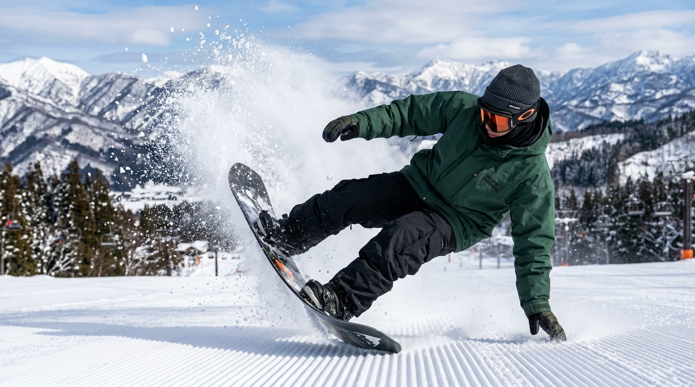
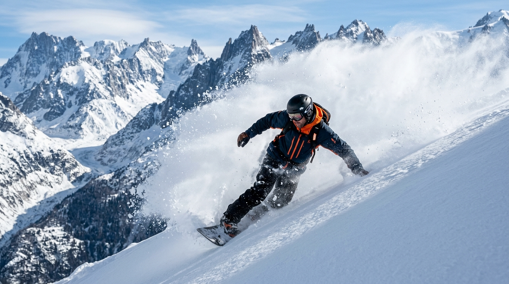

REAL-HUMAN PHOTO 01
真人實拍對照：Toeside 前刃 vs Heelside 後刃關節屈曲與雪花噴射
高速快門（1/2000s）真人實拍對比前刃與後刃刻滑時的膝踝屈曲角度、骨盆折角（Angulation）與視線引導，完美呼應 MOD-03 生物力學槓桿對稱訓練。
由 50 位來自全球各大認證體系考官、運動生物力學博士、日本 JSBA 技術選與平花選手、X-Games 公園教練、AIARE 雪崩救援專家及專業 UI/UX 團隊聯合編纂與三階段審核。從季前肌力、COM/BOS 物理核心、初中高階刻滑，到平花組合邏輯、Park 跳台拋物線、樹林蘑菇與野雪雪崩科學，打造最詳盡的數位互動教材。

不同國家的雪況、地形與文化孕育了截然不同的單板教學切入點。本教材由具備跨協會滿級認證（CASI Lv4、AASI Lv3、SBINZ Lv3/Trainer、JSBA A級/技術選、BASI ISTD）的教練團去蕪存菁，建立統一且互補的物理與教學語言。
單靠靜態文字無法掌握毫秒間的「換刃時機 (Edge Change Timing)」與「質心投影 (COM-BOS Vector)」。左側為 60fps 多視角技術動作分解影片模擬器（支援 0.25x 超慢動作、時間軸拖曳與即時教練字幕）；右側為 即時生物力學參數實驗室，可自由調整立刃角、前後配重、折角與滑行速度，觀察物理公式與卡刃風險變化。
拖動下方滑桿改變滑手姿態，即時計算有效刻滑半徑 \(R_{\text{eff}}\)、平衡傾角 \(\theta_{\text{eq}}\) 與逆刃 (Catching an Edge) 臨界值：
點擊左側章節切換完整課程內容。每一章節皆包含物理與生物力學核心原理（含公式與數據指標）、分級實戰訓練科目 (Drills)、精準重心與關節角度設定、常見錯誤力學診斷以及50人專家團隊思維心法。
平花（Ground Tricks / Buttering）絕非死記硬背招式名稱，而是由 8 大基礎原子技能 (Atomic Skills) 透過 4 大發力與動量銜接邏輯（儲能彈跳、反向預轉蓄力、刃對點轉換、雙軸重心鎖定） 組裝而成。點擊左側基礎原子技能可篩選包含該元素的進階招式，點擊右側招式卡片可檢視完整 Phase 1–Phase 4 重心百分比、用刃角度与失敗防卡刃解析。
本教材為 10 大課程模組（40 項物理原理 + 40 項實戰技能） 以及 平花招式矩陣（8 大基礎原子技能 + 12 組進階組合招式） 共 100 個教學單元，全數配備專屬的真人實拍動作解析照片 (`assets/media/images/*.jpg`) 與真人慢動作力學分解 MP4 影片 (`assets/media/videos/*.mp4`)。以下為真人實拍與物理藍圖精選：
高速快門（1/2000s）真人實拍對比前刃與後刃刻滑時的膝踝屈曲角度、骨盆折角（Angulation）與視線引導，完美呼應 MOD-03 生物力學槓桿對稱訓練。

展示真實滑手在晨間燈芯絨雪道（Corduroy）透過極限傾角與外向傾控制，讓雪板有效鋼邊切出零滑移的單一鉛筆線軌跡（Pencil-Line Trench）。

真人滑手將質心（COM）精準推過前腳固定器外側，前膝微屈、後腿上提使板尾離地，清楚展現懸臂樑彈性位能儲存狀態。

高速捕捉日本グラトリ（Gra-tri）流暢系招式精髓：後刃板尾深壓建立支點（Tail Block），搭配上半身預轉與手部平衡，瞬間釋放板頭迴旋動量。

真人滑手於 Kicker 跳台拋物線頂點主動屈膝收腿（Tuck）縮小轉動慣量 \(I\)，並以手抓握兩腳間前刃穩定空中三軸姿態，視線鎖定 Sweet Spot 落地斜坡。

於阿爾卑斯高山野雪粉雪碗（Backcountry Bowl）中，滑手利用板頭動壓升力（Planation Lift）與三維垂直壓縮回彈，激起巨幅冷煙粉雪浪花。
本線上教材由 10 個專業領域小組（每組 5 位專家，共 50 人） 進行獨立技術審查、物理公式驗算、教學法校准與視覺體驗無障礙檢測。以下列出全體 50 位專家針對初稿所發現的潛在問題與最終修正方案，確保每一條原理與動作指導皆達到國際考官級精準度。
p_01_01–p_10_04）與 40 項實戰技能（s_01_01–s_10_04），經 CASI/AASI/SBINZ/JSBA/BASI 考官組逐一核對，左側呈現真人四階段連續動作序列（Step 1 ➔ Step 4），右側同步呈現「✅ 正確真人連續動作」與「❌ 錯誤逆刃/折腰/洗刃連續動作」動態對比。
step_01_01–step_10_04）與常見錯誤及專家 Tips（err_01_01–err_10_04），以及平花 8 大原子技能（atomic_01–08）、12 大組合招式主體（combo_01–12）、Phase 1–4 步驟（combo_step_01–12）與防卡刃 Tips（combo_err_01–12），全數配備專屬圖解與連續動作 MP4 影片。
#070B14 / #0B1120）搭配冷光青（#38BDF8 代表速度與 COM 軌跡）及暖陽橘（#FB923C 代表壓力、BOS 與立刃角）；同時提供頂部一鍵切換「雪地強光高對比模式」，解決雪場陽光直射手機螢幕反光問題。
JetBrains Mono）標示角度與配重比，讓學員 5 秒內抓到核心指標。